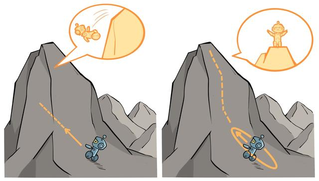

本书之前介绍的基于策略的方法包括策略梯度算法和 Actor-Critic 算法。这些方法虽然简单、直观，但在实际应用过程中会遇到训练不稳定的情况。
回顾一下基于策略的方法：参数化智能体的策略，并设计衡量策略好坏的目标函数，通过梯度上升的方法来最大化这个目标函数，使得策略最优。具体来说，假设θ表示策略πθ的参数，定义J(θ)=Es0[Vπθ(s0)]=Eπθ[∑t=0∞γtr(st,at)]，基于策略的方法是找到θ∗=argmaxθJ(θ)，策略梯度方法主要沿着∇θJ(θ)方向更新策略参数θ。但是这种算法有一个明显的缺点：当策略网络是深度模型时，沿着策略梯度更新参数，很有可能由于步长太长，策略突然显著变差，进而影响训练效果。
针对以上问题，我们考虑在更新时找到一块信任区域（trust region），在这个区域上更新策略时能够得到某种策略性能的安全性保证，这就是信任区域策略优化（trust region policy optimization，TRPO）算法的主要思想。
策略目标
假设当前策略为πθ，参数为θ。我们考虑如何借助当前的θ找到一个更优的参数θ′，使得J(θ′)≥J(θ)。具体来说，由于初始状态s0的分布和策略无关，因此上述策略πθ下的优化目标J(θ)可以写成在新策略πθ′的期望形式（即轨迹的生成服从πθ′）：
J(θ)=Es0[Vπθ(s0)]=Eπθ′[t=0∑∞γtVπθ(st)−t=1∑∞γtVπθ(st)]=−Eπθ′[t=0∑∞γt(γVπθ(st+1)−Vπθ(st))]
基于以上等式，我们可以推导新旧策略的目标函数之间的差距：
J(θ′)−J(θ)=Es0[Vπθ′(s0)]−Es0[Vπθ(s0)]=Eπθ′[t=0∑∞γtr(st,at)]+Eπθ′[t=0∑∞γt(γVπθ(st+1)−Vπθ(st))]=Eπθ′[t=0∑∞γt[r(st,at)+γVπθ(st+1)−Vπθ(st)]]
将时序差分残差定义为优势函数A：
=Eπθ′[t=0∑∞γtAπθ(st,at)]=t=0∑∞γtEst∼Ptπθ′Eat∼πθ′(⋅∣st)[Aπθ(st,at)]=1−γ1⋅Es∼νπθ′Ea∼πθ′(⋅∣s)[Aπθ(s,a)]
这里从第二行到第三行的转化消去了时间t的影响，这是因为随着时间t越来越大，状态s的分布趋向于平稳分布νπθ′而与时间无关。这里运用到了状态访问分布的定义：νπ(s)=(1−γ)∑t=0∞γtPtπ(s)，所以只要我们能找到一个新策略，使得Es∼νπθ′Ea∼πθ′(⋅∣s)[Aπθ(s,a)]≥0，就能保证策略性能单调递增，即J(θ′)≥J(θ)。
但是直接求解该式是非常困难的，因为πθ′是我们需要求解的策略，但我们又要用它来收集样本。把所有可能的新策略都拿来收集数据，然后判断哪个策略满足上述条件的做法显然是不现实的。于是 TRPO 做了一步近似操作，对状态访问分布进行了相应处理。具体而言，忽略两个策略之间的状态访问分布变化，直接采用旧的策略πθ的状态分布，定义如下替代优化目标：
Lθ(θ′)=J(θ)+1−γ1⋅Es∼νπθEa∼πθ′(⋅∣s)[Aπθ(s,a)]
当新旧策略非常接近时，状态访问分布变化很小，这么近似是合理的。其中，动作仍然用新策略πθ′采样得到，我们可以用重要性采样对动作分布进行处理：
Lθ(θ′)=J(θ)+Es∼νπθEa∼πθ′(⋅∣s)[πθ(a∣s)πθ′(a∣s)Aπθ(s,a)]
这样，我们就可以基于旧策略πθ已经采样出的数据来估计并优化新策略πθ′了。为了保证新旧策略足够接近，TRPO 使用了KL散度来衡量策略之间的距离，并给出了整体的优化公式：
θ′maxLθ(θ′)s.t.Es∼νπθk[DKL(πθk(⋅∣s),πθ′(⋅∣s))]≤δ
这里的不等式约束定义了策略空间中的一个 KL 球，被称为信任区域。在这个区域中，可以认为当前学习策略和环境交互的状态分布与上一轮策略最后采样的状态分布一致，进而可以基于一步行动的重要性采样方法使当前学习策略稳定提升。TRPO 背后的原理如图所示。

左图表示当完全不设置信任区域时，策略的梯度更新可能导致策略的性能骤降；右图表示当设置了信任区域时，可以保证每次策略的梯度更新都能来带性能的提升